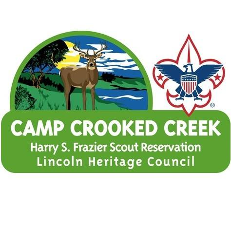
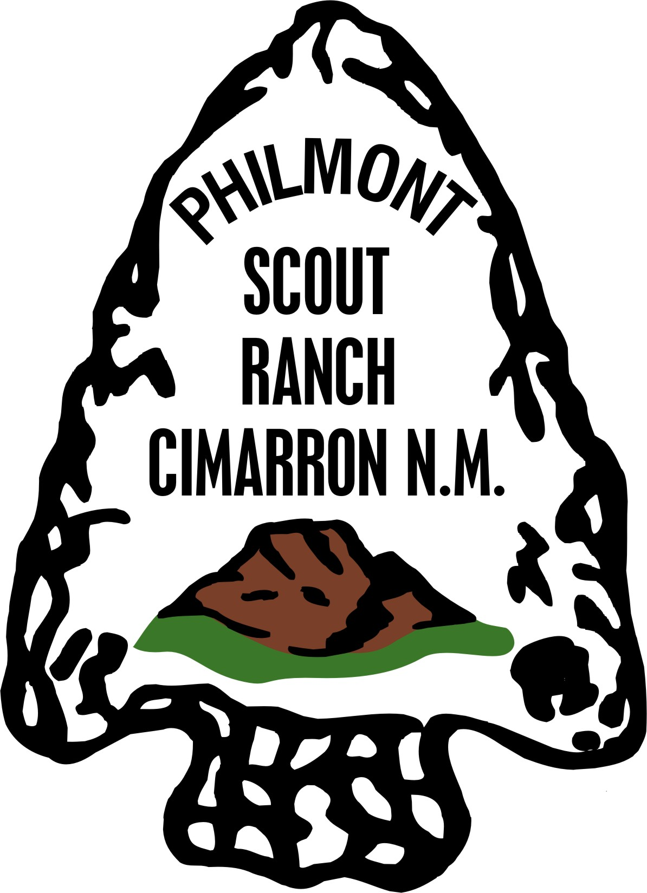
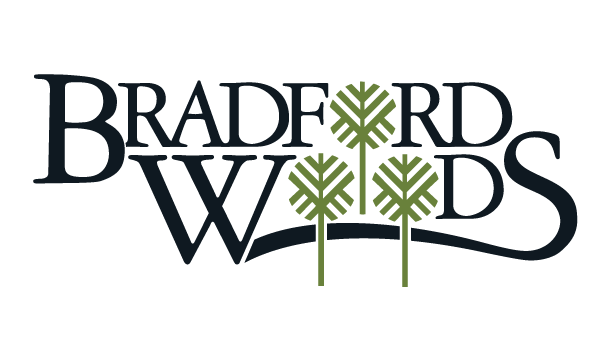

I have been in the camping and outdoor industry since my first season on a summer camp staff in 2003. From 2010 to 2023, with a break due to COVID-19 I served as a full-time professional with the Boy Scouts of America focusing on membership growth, program delivery, and outdoor adventure. I have a proven record of success in all non-profit operations functions, including volunteer recruitment, fundraising, and board engagement. I can't wait to put my experience to work for you!
Previous Full-Time Employers

Lincoln Heritage Council
Boy Scouts of America
Louisville, Kentucky
Northern Tier High Adventure
Boy Scouts of America
Ely, Minnesota
Three Fires Council
Boy Scouts of America
St. Charles, Illinois

Greater Tampa Bay Area Council
Boy Scouts of America
Tampa, Florida
Florida Southern College
Lakeland, Florida
Previous Seasonal Employers

Camp Crooked Creek
Lincoln Heritage Council
Boy Scouts of America
Shepherdsville, Kentucky

Philmont Scout Ranch
Boy Scouts of America
Cimarron, New Mexico

Bradford Woods
Indiana University
Martinsville, Indiana